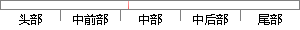

此模块含有注册、登录、退出登录三个功能点，用户必须先注册才能正常进入应用。
片段位置图

相似结果|
相似片段 1：的服务功能是个性化的，因此用户要先进行注册登录操作才能进入系统。设计用户注册、登录模块的软件流程，如图4．2所示。首次使用的用户必须先进行注册，在登录界面可以跳转到用户注册功能进行注册操作，注册完成
相似片段 2：/下载模块和讨论交流模块。五个模块之间并非都是并列关系，用户只有通过注册或登录后才能选择其他的四个模块。（1）注册/登录模块注册登录模块就是用户需要先进行注册或登录才能进入系统。设置用户注册和登录功能
相似片段 3：的初始设置，主要有用户基础信息设置、用户密码设置和退出系统等功能：系统维护管理部分主要实现数据备份与恢复和日志管理两大功能。4．1．1用户登录及注册在主界面中由菜单项选择就可以进入系统管理模块。在系统管理
|
※ 片段修改建议 ※
近似词参考：- 功能：功效
- 才能：才气
- 应用：利用 运用
系统自动生成语句：此模块含有注册、登录、退出登录三个功效点，用户必须先注册才气正常进入利用。
注：本片段修改建议为系统自动生成，仅供参考。